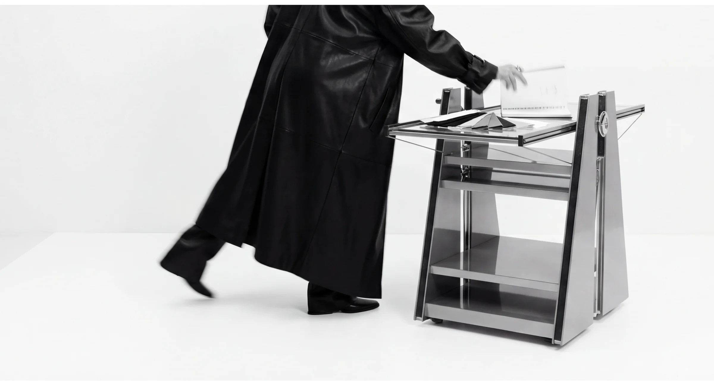
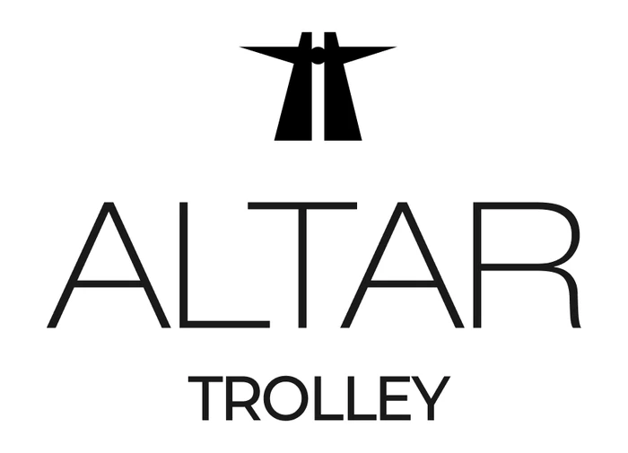
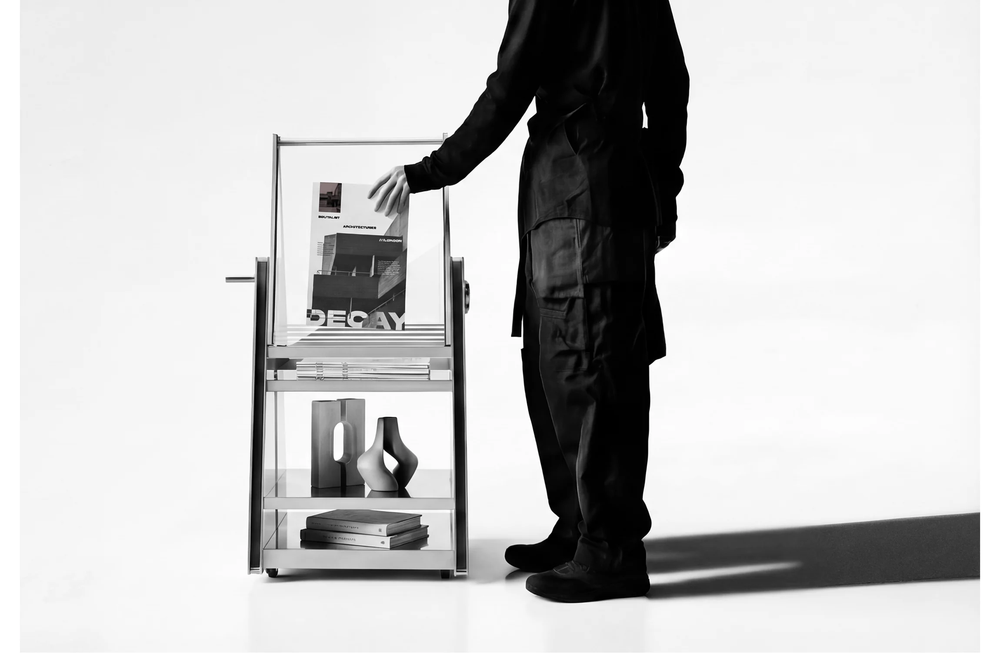
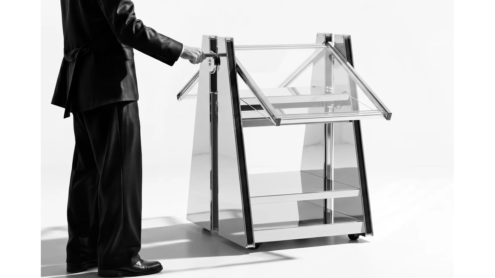
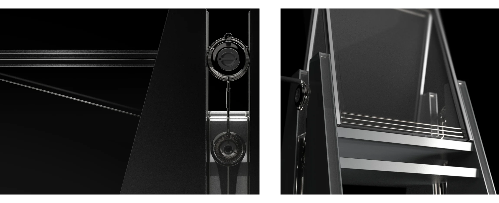
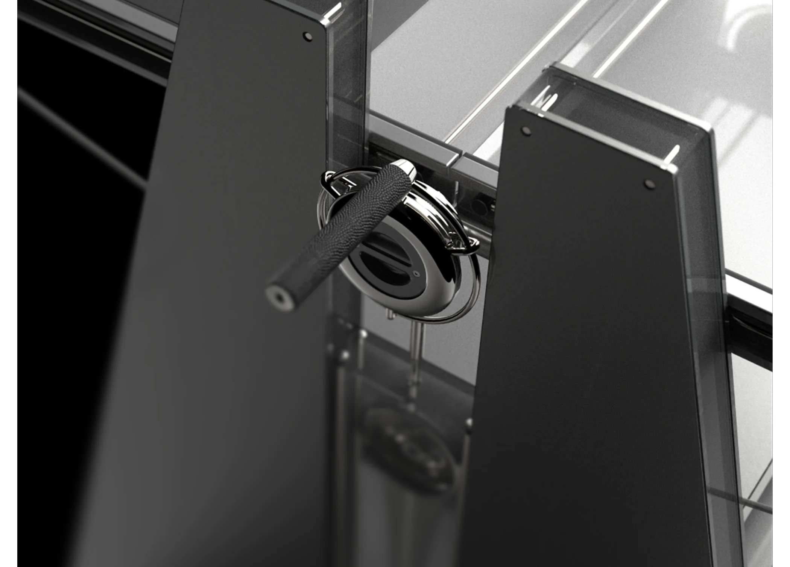

02 / Small Furniture

ALTAR Trolley
2-Way Living Trolley
사용 목적에 따라 구조가 변형되는 2-Way 리빙 트롤리입니다. 선반을 접으면 책과 오브제를 거치하는 디스플레이 스탠드로, 펼치면 이동형 수납장 또는 작업대로 사용할 수 있도록 설계했습니다.
Function / Transition
한 구조 안의 두 가지 사용 방식
접힌 선반은 오브제를 세우는 면이 되고, 수평으로 펼쳐지면 작업과 수납을 위한 넓은 상판이 됩니다. 구조의 전환이 가구의 표정과 공간에서의 역할을 함께 바꿉니다.


Detail / Mechanism
기능을 드러내는 금속 디테일
회전축과 와이어, 프레임의 결합을 숨기지 않고 형태의 일부로 사용했습니다. 검은 측판과 투명한 면 사이에서 작은 기계 요소가 구조의 긴장감을 만듭니다.


Object in use
공간과 사용 목적에 따라 가구의 면과 기능이 달라지는 리빙 오브젝트입니다.